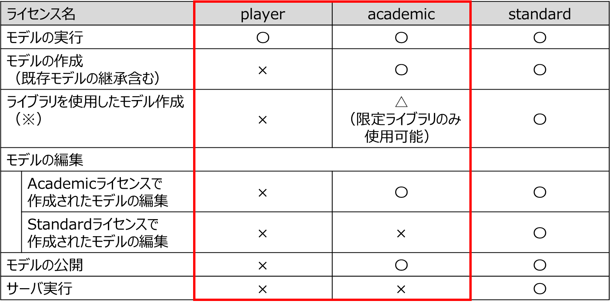
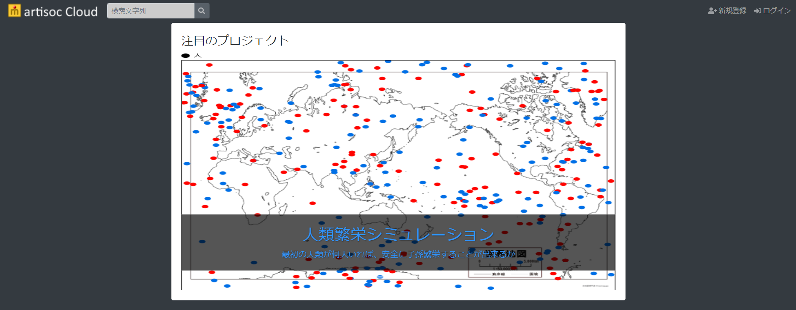
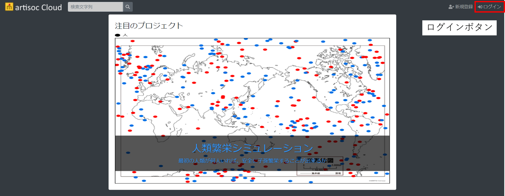
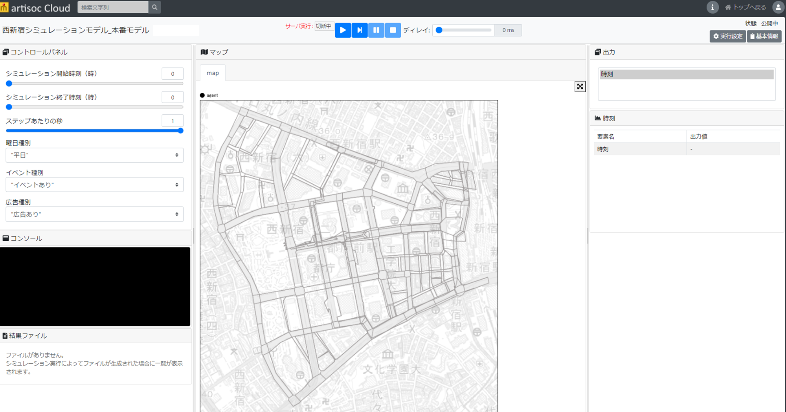

インストール方法
ここでは、artisoc Cloud academic/playerライセンスにおけるモデルの使用方法を記載します。
動作環境、前提ソフトウェア、必要ライセンス
動作環境
artisoc Cloudのインストールが閲覧に必要となります。
artisoc Cloudの使用マニュアルは、artisoc Cloudログイン後、取得することが可能です。
また、artisoc Cloudのチュートリアル資料をWeb上に公開していますので、併せてご参照ください。
必要ライセンス
- artisoc Cloud academicライセンス、playerライセンス
- 本モデルはstandardライセンスで作成されたモデルであるため、モデルを実行することのみが可能です。
- 本モデルのソースコードの閲覧自体は、model_files>model>universe あるいはmodel_files>model>modules内にあるpythonファイルから確認可能です。ただし、ソースコードはartisoc Cloud専用でのソースコードとなっており、pythonファイルをそのまま実行しても動作しないものとなります。
- academicライセンス、playerライセンスでは、下記表赤枠内の機能を使用できます。  （※）各ライセンスで使用可能なライブラリは、artisoc Cloudで利用できるライブラリに記載しています。
参考資料
- artisoc Cloud HP(https://mas.kke.co.jp/artisoccloud/)
インストール手順
artisoc Cloudにアクセスします。 
右上の「ログイン」ボタンから、ログインを行います。 
artisoc Cloud 西新宿シミュレーションモデルにアクセスします。 